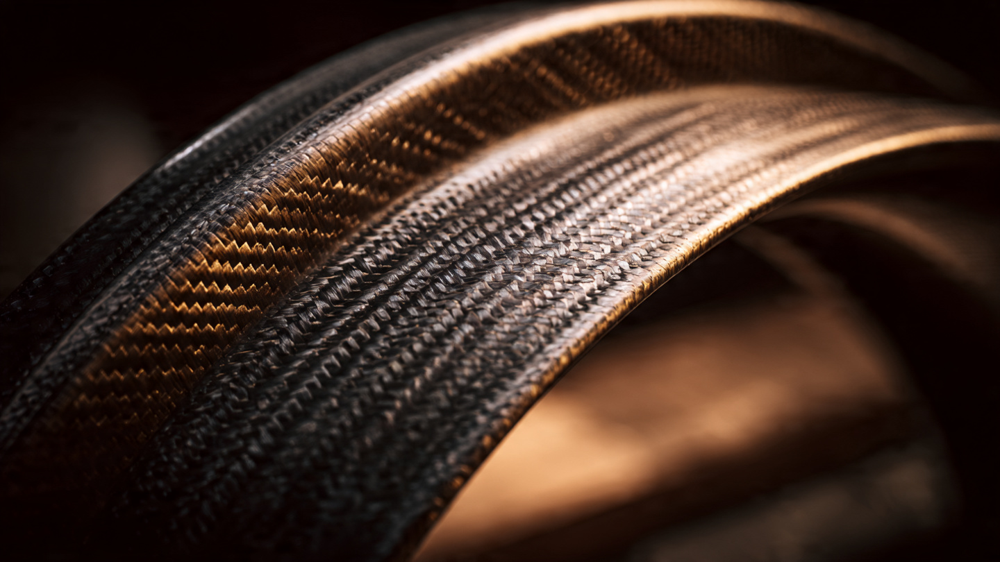

Seventeen Pounds per Corner: Engineering One-Piece Carbon Fiber Wheels

A forged aluminum wheel for a 20-inch performance fitment weighs roughly 30 pounds. It arrives at that weight after decades of metallurgical optimization: flow forming, low-pressure casting, T6 heat treatment, CNC machining of every surface. Aluminum wheel engineering is mature. Squeeze another pound out and you are fighting diminishing returns against a material whose density, 2.7 grams per cubic centimeter, sets a hard floor on how light the part can get.
Carbon fiber reinforced polymer has a density between 1.5 and 1.6 grams per cubic centimeter. In theory, a carbon composite wheel of identical geometry would weigh roughly half as much. In practice, the number lands between 40 and 50 percent lighter, because composite wheels require additional material in impact zones and bolt patterns where metal would rely on ductile yielding that composites cannot replicate. Still, a 20-inch one-piece carbon fiber wheel from ESE Carbon weighs 17 pounds. On a Corvette Z06, Carbon Revolution's full set reduces unsprung mass by 41 pounds. On the ZR1, that figure climbs to 42.8 pounds. Every pound of unsprung weight removed does roughly four to eight times more for ride quality and handling response than a pound removed from the sprung mass above the suspension.
Building a wheel from carbon fiber is straightforward in concept. Building one that survives pothole strikes in Michigan, brake rotor temperatures exceeding 600 degrees Celsius, salt spray in February, and 200,000 miles of fatigue loading is an entirely different problem. Three companies have each solved it through different manufacturing philosophies, and their divergent approaches reveal how much the process matters when the material stays constant.
Why Wheels Are Difficult Composites
An aircraft fuselage panel carries load primarily in one or two directions. A pressure vessel experiences uniform hoop stress. A wheel, by contrast, must handle radial loads from vehicle weight, lateral loads from cornering, torsional loads from braking and acceleration, and concentrated impact loads from road hazards, all simultaneously and through a geometry that transitions from flat spokes to a cylindrical rim barrel to a flanged bead seat. No single fiber orientation handles all of these load paths.
In metallic wheels, ductility provides a safety margin. Aluminum yields before it fractures, absorbing energy by deforming plastically. A pothole strike that dents an aluminum rim still leaves it functional, if cosmetically damaged. Carbon fiber does not yield. It is elastic until failure, and failure in a composite is catastrophic: fibers snap, matrix cracks propagate between plies, and the part loses structural integrity in a way that aluminum forgings simply do not. Every carbon fiber wheel must therefore be designed to a higher safety factor than its aluminum equivalent, with additional material at the bead flanges and spoke roots where impact loads concentrate.
Thermal management creates a second engineering problem. Brake rotors on a track-driven sports car can exceed 700 degrees Celsius. Heat conducts through the hat section of the rotor, into the mounting bolts, and directly into the wheel center. Epoxy resin systems, the most common matrix material in structural composites, have glass transition temperatures between 120 and 200 degrees Celsius depending on formulation. Above glass transition, the resin softens and the composite loses stiffness. Carbon Revolution addresses this with proprietary thermal barrier coatings applied to the inner face of the wheel center. Hagerty documented the company's use of heat-reflective materials and specialized high-temperature resin systems rated above the operating envelope of any production brake system.
Fatigue behavior represents the third challenge. Metals fatigue through crack initiation and propagation, a well-understood process governed by S-N curves. Composites fatigue through matrix microcracking, delamination between plies, and fiber breakage, three distinct failure modes that interact in complex ways. A wheel experiences roughly one million load cycles per 20,000 miles of driving. Over a 200,000-mile service life, that compounds to ten million cycles, a regime where even small defects in fiber alignment or resin voids can initiate damage accumulation.
Carbon Revolution: Prepreg and Autoclave at Scale
Carbon Revolution, founded in Geelong, Australia in 2007, pioneered mass production of one-piece carbon fiber wheels. As of 2026, the company holds over 120 patents, has delivered more than 100,000 wheels, and operates an ISO 9001-certified factory that achieved Ford's Q1 supplier certification. Every wheel undergoes more than 160 in-process measurements during manufacture.
Carbon Revolution's process begins with prepreg: carbon fiber fabric pre-impregnated with a thermoset epoxy resin system. Prepreg arrives from the material supplier as rolls of tacky, partially cured fabric stored at minus 18 degrees Celsius to prevent premature cure. Technicians cut the prepreg into precise shapes and lay them into a female mold, building the wheel geometry ply by ply. Fiber orientation varies between plies, with typical layup schedules incorporating 0-degree, plus and minus 45-degree, and 90-degree orientations to handle multi-directional loads. Zero-degree plies carry spoke bending loads. The 45-degree plies handle torsion. Ninety-degree plies provide lateral stiffness in the rim barrel.
Once the layup is complete, the mold enters an autoclave, a pressurized oven that applies both heat and external pressure simultaneously. Typical autoclave cure cycles for aerospace-grade epoxy systems run at 120 to 180 degrees Celsius under 6 to 7 bar of pressure for two to six hours, depending on the resin system and part thickness. Pressure consolidates the plies, driving out trapped air and excess resin to achieve fiber volume fractions above 55 percent. Higher fiber volume means more load-bearing fiber per unit area and less dead-weight resin.
After cure, each wheel is demolded, trimmed, and machined at the bolt circle and center bore to tolerances that match OEM specifications. Carbon Revolution's Diamond Weave Technology, visible on the Corvette Z06 wheels, uses a cosmetic outer ply with a specific twill weave pattern oriented to showcase the carbon fiber aesthetic through a UV-resistant clear coat. Beneath that cosmetic layer sit the structural plies that do the actual work.
For the Corvette Z06, Carbon Revolution developed a five-spoke design with what the company calls "ski jump" spoke-to-rim transitions, an elevated fillet radius where each spoke meets the rim barrel. Increasing the fillet radius at this junction reduces stress concentration by distributing load over a larger area, the same principle that drives fillet optimization in turbine blade roots. GM subjected these wheels to its full validation protocol: radial fatigue, cornering fatigue, 13-degree and 30-degree impact testing, thermal cycling, and chemical resistance. Wheels that survive GM's testing represent a small fraction of those that enter it.
Thyssenkrupp: Braided Architecture
Thyssenkrupp Carbon Components, based in Germany, took a fundamentally different manufacturing approach. Rather than cutting flat fabric and laying it into a mold by hand, Thyssenkrupp uses radial braiding machines that weave carbon fiber tows directly around a mandrel in the shape of the wheel. Over 18 kilometers of continuous carbon fiber are braided into each wheel for the Porsche 911 Turbo S Exclusive Series, creating a seamless fiber architecture with no cut edges and no ply boundaries in the conventional sense.
Braiding produces a triaxial fiber architecture: 0-degree axial fibers running along the mandrel axis, and two sets of bias fibers at plus and minus angles (typically 30 to 60 degrees, tuned by machine speed and mandrel rotation rate). Because the fibers are continuous and interlocked, braided preforms resist delamination more effectively than stacked prepreg plies. In a laminated prepreg layup, the interface between plies is a potential delamination site because only the resin matrix bonds them together. In a braided structure, fibers physically interlock across layers.
After braiding, the dry preform is placed in a closed mold for resin transfer molding. Liquid epoxy is injected under pressure, filling the spaces between fibers and saturating the preform. Once injected, the mold is heated to cure the resin. RTM offers a key advantage over autoclave processing: cycle times can be shorter because the resin system is tailored for fast injection and rapid cure, and the closed mold produces consistent surface finish on both inner and outer faces without secondary tooling.
Thyssenkrupp earned the Society of Plastics Engineers' automotive innovation award for these braided carbon wheels. Bilstein distributes the motorcycle versions in the United States, with ABE, DOT E, and JWL certifications making them the only street-legal braided carbon wheels available globally. For the BMW HP4 Race, the wheels achieve 30 percent weight savings over aluminum and 40 percent reduction in gyroscopic force, a metric that directly affects how much effort is required to change the wheel's rotational axis during cornering.
ESE Carbon: Tailored Fiber Placement
ESE Carbon, based in Miami, represents a third manufacturing philosophy. Founded in 2011, the company uses tailored fiber placement (TFP) technology developed by ZSK Stickmaschinen of Krefeld, Germany. TFP works by stitching individual carbon fiber tows onto a carrier fabric along computer-controlled paths, placing fiber only where structural analysis says it is needed. Areas that would be cut away and discarded in conventional fabric layup are simply left unstitched.
Where prepreg layup cuts rectangular sheets and drapes them over complex geometry, producing waste rates around 40 percent, TFP reduces carbon fiber waste to below 10 percent. ESE uses industrial-grade carbon fiber tow from Hyosung Advanced Materials and stitches it into near-net-shape preforms that conform to the wheel's geometry before molding. Ply count drops by up to 50 percent compared to conventional lamination because each TFP ply places fiber at optimal angles rather than forcing uniform orientation across the entire sheet.
ESE's E2 wheel, a five-spoke design inspired by a Porsche aluminum wheel and then reengineered for composite construction, weighs 17 pounds in a 20-inch fitment. It carries a 3,850-pound axle rating, supporting vehicles up to 6,800 pounds gross weight. A traditional aluminum wheel rated for the same load would exceed 30 pounds. After TFP preforming, ESE uses a proprietary compression resin transfer molding process in custom presses that consolidate and cure the wheel in a single step. One piece, one cure, no bonded joints between separately molded sections.
ESE's CEO Carlos Hermida and VP of product development Michael Hayes have contributed testing data and prototype wheels to the SAE task force developing J3204, a new recommended practice specifically for composite wheels. Unlike existing SAE standards written for metallic wheels, J3204 adds environmental conditioning requirements: UV exposure, thermal cycling, and chemical resistance testing that account for composite-specific degradation pathways. ESE expects to be the first company to certify a one-piece wheel under this new standard.
Dymag: The Hybrid Argument
Not every manufacturer believes one-piece construction is necessary. Dymag Technologies, founded in Wiltshire, England, produces hybrid wheels that combine a carbon fiber rim barrel with a forged aluminum center. Partnered with Hankuk Carbon for material supply and recently collaborating with Hyundai on N Performance vehicles, Dymag targets the space between full-aluminum and full-carbon with a two-piece bonded design.
Dymag's logic is pragmatic. Rim barrels benefit most from weight reduction because they sit at the largest diameter, where mass contributes disproportionately to rotational inertia. A 20-inch wheel's rim barrel accounts for 60 to 70 percent of its total rotational inertia. Replacing just the barrel with carbon fiber captures the majority of the dynamic benefit while retaining a forged aluminum center that handles bolt loads, brake hat contact, and hub centric registration through conventional metallic engineering. Dymag's Halo X wheels for the Porsche GT3 RS reduce unsprung weight by 7.1 to 9.4 kilograms per set depending on the fitment, at a retail price of $36,500 for four.
Hybrid construction sidesteps some of the hardest problems in one-piece composite wheel engineering, specifically the transition zone where spokes meet the rim barrel and the bolt circle area where concentrated fastener loads must be distributed into a non-metallic substrate. It introduces a new one: the adhesive bond between the carbon rim and aluminum center must survive the same fatigue loading, thermal cycling, and chemical exposure as the rest of the wheel. Dymag's BX-F flange technology and proprietary bonding process address this, but the bonded joint remains an additional failure mode that one-piece construction eliminates by definition.
Defect Detection and Quality Control
Every composite part contains imperfections. Resin-rich zones, resin-starved zones, fiber misalignment, micro-voids, and ply wrinkles are inherent to manual and semi-automated layup processes. In an aircraft fuselage panel, these defects are mapped and dispositioned by stress engineers who compare each flaw against allowable limits. A wheel cannot afford that level of case-by-case analysis at automotive production volumes.
Carbon Revolution's 160-plus in-process measurements per wheel reflect an Industry 4.0 approach to quality control. Automated inspection stations check fiber placement, ply compaction, and resin distribution at multiple stages during manufacture rather than relying on final inspection to catch upstream errors. Non-destructive testing after cure typically includes ultrasonic inspection, where sound waves propagated through the part detect delaminations, voids, and disbonds as reflections at material boundaries. Phased array ultrasonic testing, which uses electronically steered beam angles rather than fixed transducers, can detect flaws as small as 0.8 millimeters and penetrate composite thicknesses up to 25 millimeters, more than sufficient for wheel cross-sections that rarely exceed 15 millimeters.
Computed tomography (CT) scanning provides a complementary inspection method, generating three-dimensional maps of internal structure at resolution levels below one millimeter. CT reveals fiber orientation, void distribution, and ply boundaries that ultrasonic methods may miss in complex geometries. However, CT scan times measured in minutes per part limit its use to sampling inspection or failure analysis rather than 100-percent production screening. Balancing inspection thoroughness against cycle time is one of the less visible engineering challenges in composite wheel production.
NVH: The Unexpected Advantage
Carbon fiber composite has an inherent damping ratio roughly five to ten times higher than aluminum. When a wheel strikes a road imperfection, it vibrates. In an aluminum wheel, those vibrations propagate through the rim into the tire bead and through the hub into the suspension, generating noise and harshness perceptible in the cabin. Composite wheels absorb a measurable fraction of that vibrational energy through internal friction between fibers and matrix, converting mechanical vibration into trace amounts of heat.
Ford documented this effect when developing carbon fiber wheels for the GT. Engineers measured a 25 percent reduction in unsprung weight but also recorded a notably quieter ride quality compared to the aluminum baseline. Vibrations that previously transmitted from road surface through wheel through suspension through chassis and into the cabin were attenuated at the first link in that chain. For electric vehicles, where the absence of engine noise makes tire and road noise more prominent, this damping characteristic is particularly valuable.
SAE Technical Paper 2017-01-0500 measured damping loss factors of carbon fiber composite vehicle components and found values significantly higher than steel, though lower than laminated sandwich structures. In a wheel application, the damping improvement is most noticeable in the 200 to 800 Hz frequency band where road noise dominates, a range that passengers perceive as rumble and harshness. Carbon Revolution has cited NVH improvement as a primary selling point for EV applications, where reducing unsprung mass and road noise addresses two range-relevant problems simultaneously: lighter wheels reduce rolling resistance while better damping reduces the need for heavy sound-deadening material in the cabin.
Cost, Scale, and the EV Catalyst
A set of Carbon Revolution wheels for the Corvette Z06 adds roughly $9,000 to $12,000 to the vehicle cost. Aftermarket carbon fiber wheels from smaller manufacturers can exceed $15,000 per set. By comparison, a set of premium forged aluminum wheels costs $3,000 to $5,000. Carbon fiber wheels remain three to four times more expensive than their aluminum equivalents.
Manufacturing cycle time is the primary cost driver. An autoclave cure cycle measured in hours produces one wheel per mold per cycle. Aluminum forgings measured in minutes produce dozens per hour from a single press. Carbon Revolution announced a 25 percent price reduction through manufacturing efficiency improvements, but the fundamental cost structure of autoclave-cured prepreg remains higher than metallic forming. ESE Carbon's RTM process targets shorter cycle times by eliminating the autoclave entirely, and Thyssenkrupp's braiding technology automates preform creation at speeds faster than manual layup. Both represent paths toward cost reduction, but neither has yet matched the production economics of forged aluminum.
Electric vehicles may accelerate adoption despite the cost premium. Every kilogram of unsprung mass removed from an EV improves range through reduced rolling resistance and allows lighter suspension components because the spring and damper no longer need to control as much moving mass. Carbon Revolution has explicitly pivoted toward EV supply contracts, stating plans to scale production capacity. Dymag and Hankuk Carbon's partnership similarly targets luxury EVs and large SUVs where the range benefit of lighter wheels justifies premium pricing. If battery cost per kilowatt-hour continues falling, the trade-off between expensive light wheels and cheap heavy ones shifts in carbon fiber's favor.
What Ten Million Cycles Prove
A wheel is a consumable viewed on a geological timescale and a permanent fixture viewed on a human one. Most drivers expect their wheels to outlast the vehicle. Meeting that expectation with a material that does not yield, cannot be bent back into shape, and fails catastrophically rather than gracefully requires an engineering margin that the carbon fiber industry has spent nearly two decades establishing.
Over 100,000 Carbon Revolution wheels now accumulate road miles on Corvettes, Ford GTs, Ferraris, and Mustangs. Every pothole, speed bump, parking curb, and track kerb strike feeds data back into finite element models and ply schedule optimization. ESE Carbon's J3204 certification process adds a formal environmental dimension that previous standards did not address. Thyssenkrupp's braided architecture eliminates entire categories of manufacturing defects by removing ply interfaces.
No single approach has won. Prepreg autoclave processing delivers proven reliability at OEM scale. Braiding offers superior delamination resistance and automated preforming. Tailored fiber placement minimizes waste and enables precise fiber steering. Hybrid construction reduces risk by confining composites to the application where they provide the greatest benefit. Each method represents a different optimization of the same underlying constraint: carbon fiber is strong along its axis, weak perpendicular to it, and the wheel applies loads in every direction simultaneously. How you orient 18 kilometers of fiber determines whether you get a structural masterpiece or expensive debris. Seventeen pounds per corner says these companies have figured it out.